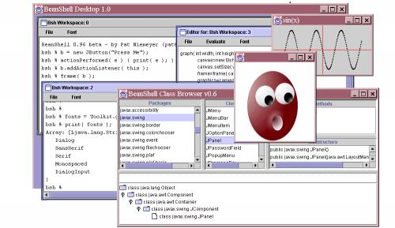

Home
Back
Contents
Next
BeanShell Desktop

The BeanShell Desktop is a simple GUI environment that provides multiple bsh shell windows (MDI), a simple text editor, and a simple class browser. The desktop is mostly implemented by BeanShell scripts, launched by the desktop() command.
Shell Windows
The bsh console windows provide simple command line editing, history, cut & paste, and variable and class name completion.
Editor Windows
The Class Browser
Home
Back
Contents
Next


 The bsh console windows provide simple command line editing, history,
cut & paste, and variable and class name completion.
The bsh console windows provide simple command line editing, history,
cut & paste, and variable and class name completion.